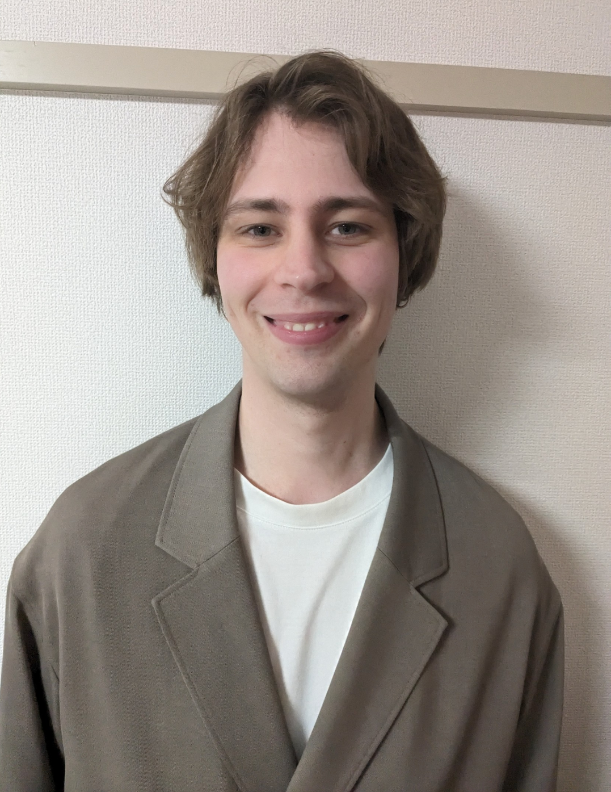

Jeg er 29 år og bor på Frederiksberg, efter at have boet i Tokyo af to omgange. Hvor jeg har studeret Japansk og arbejdet part-time. Jeg afsluttede grundforløbet 2. del Data- og kommunikationsuddannelsen 10/1/2025 og Jeg er nu klar til min første læreplads på min ønske uddannelse som programmør.
About Me
Skills and Competences
Jeg har arbejdet med Java, Spring Framework, PostgreSQL, Git og C.
På studiet har jeg arbejdet med C#, HTML, CSS og Javascript.
Jeg har også kendskab til både Linux og Windows.
Jeg er nysgerrig og engageret og nyder at lære nye teknologier både i
og udenfor arbejdstid, og synes det er sjovt.
Lige nu læser jeg om design patterns.
Sprog:
Dansk: modersmål
Engelsk: flydende i skrift og tale
Japansk: flydende i skrift og tale
Work Experience
Here you will find my CV click the picture below to download my CV

Projects
Some of my projects include:
A simple chat app with a server side and a client side using tcp sockets.
(now working on making a simple gui for the client side)
A C program to calculate days between two dates.
A still in work in progress java2D game without the use of a game engine.
Please visit my Github profile for more information.
There is a link at the bottom of the page.
References
Transformeren:
Pernille Werth Larsen
Telefon: +45 24 35 94 99
Email: bj3h@kk.dk